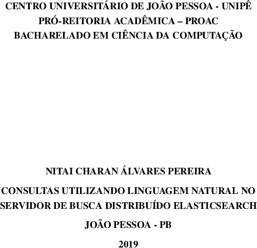
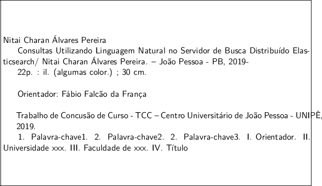
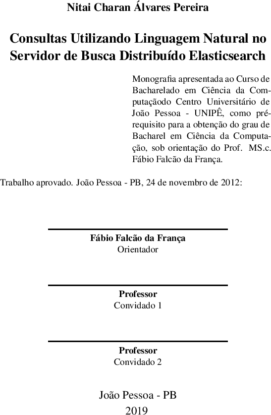
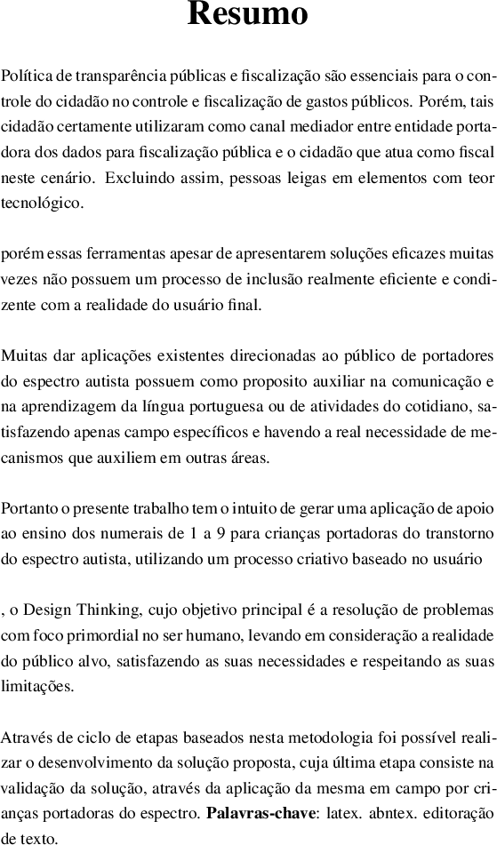

Next: List of Figures Contents Index




Construção do Resumo
Partes do Resumo
Objetivos e relevância do trabalho do trabalho.
Elementos essenciais do método de pesquisa
Principais resultados ou de maior destaque que pode ser representativo da pesquisa
Contribuição e limites do trabalho
Normas ABNT resumo
[0]List of Figureslof